日輪寺/熊本県山鹿市
山鹿市に日輪寺という寺がある。ここはツツジの花見スポットとして有名なのだが、ある日そのツツジの大群生を紹介しているガイドブックの写真の中にでかい頭がひょこっと出ているのを見つけてしまった。
「もしかしたら大仏では」との疑念を抱き続け、今回真相を確かめるべく日輪寺に行ってみた。
山鹿の市街地から北に車を走らせると暫くして山が見えて来る。・・・やはり山の中腹にドでかい頭が見える。山の中なので胴体は良く見えないがやはり大仏であった。行かいでか。
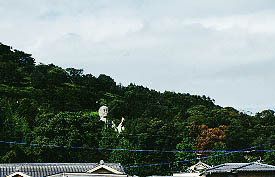
境内には眼鏡橋や二階建ての山門（二階は鐘楼）などがあり、また本堂の周りにも石仏などが並んでおり歴史の古さを彷佛とさせる寺である。田の神も観音像などにまじっているあたりは九州らしい。
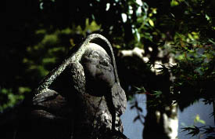 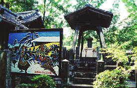
なかでも赤穂浪士の遺髪が供養されているという遺髪塔が有名であるらしい。なんでもここの檀家の堀内傅右衛門という武士が討ち入り後の赤穂47士のうち16名の世話をしていたとの事で、赤穂浪士切腹後に武士の鏡である赤穂浪士の遺髪だけでもいただきたいと申し出て、16名の遺髪をこの日輪寺に持ち帰り供養したそうな。え〜話やね〜。
さて、肝心の大仏さんである。
本堂手前の門を潜ると良く手入れされた池がありそこから階段を登って行く。登りきったところで広場に出て視界が急に開ける。で、正面にいました、大仏さん。
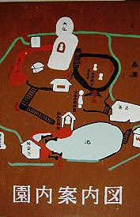 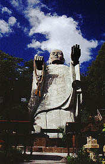
ここの大仏さんはおびんずるさまの像で高さ30メートル、幅10メートルと想像していたよりも大型であった。完成は昭和63年、グラスファイバー製とのことだが銅ペイントが施されていて、近付いてみるまでは銅製だと思い込んでいた位、上手くペイントされているので新しい大仏特有の嫌味な感じはない。むしろ「これって戦前の大仏では」と一瞬思わせるくらいの渋さがあり、手法としては悪くない。
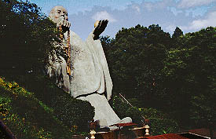 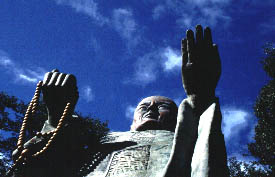
しかし気になるのはそのプロポーションだ。山の斜面に対して寄り掛かっている格好で建っているので、直立している大仏さんが後方30度に倒れちゃったみたいである。極めて不自然な格好で、人間だったら明らかに足から滑って転んでしまう体勢だがそこはお釈迦様の弟子、おびんずる様。何とか気合いで踏ん張っているようです。
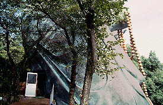
おびんずる様の横に階段があり登って行くと丁度横っ腹の辺りに到る。そこから中に入れるようになっているではないか。中に入ってみよう。
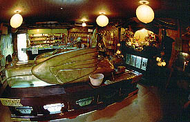 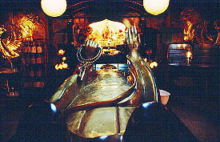
・・・中はひと部屋だけでこんな感じである。
中央に横たわるのはこれまたおびんずる様、おびんずる様といえば撫で仏、自分の身体の悪いところとおびんずる様の同じ部分を交互にを撫でると病気が治るという便利な仏さんでもあるのだ。
それにしても部屋の中央に横たわるおびんずる様、手術台の上にいるようでもある。というかこれ元々立像で、寝てるというより倒れてるって感じで不自然。
それに何と行ってもおびんずる様というものはその機能性（撫で仏）から赤漆塗りの像が一般的なのだが、ここのは金ぴかでFRP製。撫でてて御利益があるんだかどうだか良く分からないが少なくとも有難味はあまりない。取り敢えず全身撫でときました。
胎内の参拝を終え、再びおびんずる様の足元の広場に戻る。この広場の名前ナムパークっていうんだって。クックックッ・・・
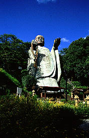
2000.7.
珍寺大道場 HOME